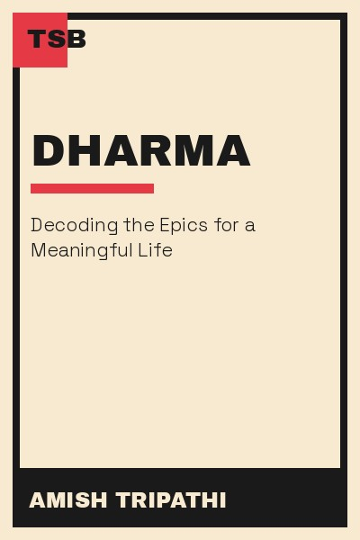

Library › Self-Improvement
Dharma — Summary & Key Lessons

Decoding the epics for a meaningful life — duty, desire and destiny.
📖 OPEN THE FULL INTERACTIVE BREAKDOWN →🌐 Read it in Hindi, Hinglish, Gujarati, Tamil & 22 more languages — free, with audio.
💡 The Big Idea
Dharma is not a fixed moral rulebook — it is the principle of right action in context, balancing four life goals: dharma (duty), artha (wealth), kama (desire) and moksha (freedom). Amish argues that the epics are not ancient stories but decision frameworks: every character is a study in what happens when these four forces fall out of balance, and every reader is invited to become the ruler of their own kingdom.
🧠 The 7 Key Lessons
Lesson 1: Dharma Is Context, Not a Rulebook
What Is Dharma?
Amish distinguishes dharma from religion: dharma is the principle of order — doing what is right for your role, time and situation. The same action can be right for one person and wrong for another. This is uncomfortable because it demands thinking instead of obeying. The lesson: ethical maturity is not memorizing rules but developing judgment. Every situation asks: what does order require here, of me, now?
📖 Example: A warrior's dharma in war is to fight; the same warrior's dharma in peacetime is to protect. Amish shows the same logic applies to modern roles — a leader's duty shifts with circumstance. Read the full example →
⚡ Do this: Pick one ethical rule you follow automatically and ask: is this right in every context, or does my situation require a different response?
Lesson 2: The Four Goals — Balance, Not Extremes
Purusharthas
Hindu philosophy recognizes four legitimate life goals: dharma (duty), artha (wealth), kama (desire) and moksha (freedom). Amish's key point: none is evil in itself — money and desire are good when they serve order, toxic when they replace it. The modern crisis is imbalance: people either worship wealth (artha without dharma) or shame it (dharma without artha). The mature life integrates all four.
📖 Example: Amish contrasts kings who hoard wealth and kings who spend it on infrastructure — same desire for artha, radically different dharma. Read the full example →
⚡ Do this: Rate your current balance across the four goals (duty, wealth, desire, freedom) from 1–10. What is over-weighted and what is starved?
Lesson 3: The Rule of Law Needs Ethical Breakers
Law and Order
Amish makes a provocative argument: rules protect order, but unjust rules must be challenged — carefully, strategically, and for the right reasons. The epics are full of characters who broke the law to serve higher dharma. The lesson: blind obedience and blind rebellion are both abdications. The mature position is selective, principled disobedience — knowing which rule to follow, which to bend and which to break, and paying the price consciously.
📖 Example: Amish points to figures in the epics who stood against unjust authority — the pattern behind every meaningful reform in history. Read the full example →
⚡ Do this: Identify one rule in your workplace or community that you follow without questioning. Is it just? If not, what would principled change look like?
Lesson 4: Desire Is Fuel, Not Fire
Kama and Control
Amish defends desire (kama): without it, no ambition, no love, no art. The problem is never wanting — it is wanting without restraint, or shaming wanting altogether. Desire is like fire: controlled, it cooks your food; uncontrolled, it burns your house. The practical framework: desire is healthy when it aligns with duty and doesn't harm others; destructive when it hijacks judgment.
📖 Example: Epic kings who let a single obsession — power, revenge, lust — destroy entire kingdoms are Amish's case studies in desire unmanaged. Read the full example →
⚡ Do this: List your top three desires. For each, ask: does pursuing this strengthen or weaken my duties and my judgment?
Lesson 5: Karma Is Action, Not Fate
Karma and Identity
Amish's definition of karma is refreshingly practical: karma is not cosmic punishment but simply action and its consequences. Your identity is your karma — you become what you repeatedly do. This puts the power back in your hands: stop asking 'what is my destiny?' and start asking 'what am I doing today?'. Destiny is the accumulated weight of daily choices.
📖 Example: Amish writes that the question 'who am I?' is best answered by observing your own actions — your patterns reveal your true priorities faster than your stated values. Read the full example →
⚡ Do this: For one week, log how you spend your free hours. Compare that log with your stated goals — that gap is your real karma.
Lesson 6: Leadership Is Protection, Not Privilege
The King's Duty
The epics define a king's legitimacy by protection: a ruler who cannot protect his people forfeits the throne. Amish translates this for modern leaders: leadership is not a reward for talent but a responsibility for others' safety, growth and order. The leader who enjoys the perks while neglecting the protection — of team, customers, mission — is, by epic standards, a usurper.
📖 Example: Amish contrasts ideal kings who eat last and guard first with tyrants who treat the kingdom as a personal ATM. Read the full example →
⚡ Do this: Ask yourself: who depends on me for protection — team, family, customers? List one concrete way you will strengthen that protection this month.
Lesson 7: Choose Your Battle, Then Fight Clean
The Kurukshetra Principle
The Mahabharata's core question: when a war is unavoidable, how do you fight it without becoming the enemy? Amish's answer: fight for dharma, not for ego — with defined limits, honest means and a clear endgame. In modern terms: conflict is sometimes necessary, but righteous conflict is disciplined. You pick your battles by importance, not by provocation, and you fight them without losing yourself.
📖 Example: The epics show warriors who win while staying bound by rules of engagement, versus those who win by any means and inherit the poison of their victory. Read the full example →
⚡ Do this: Name one conflict in your life. Is it worth fighting? If yes, define your limits: what means will you not use, and what does a clean win look like?
✅ 5-Step Action Plan
- Rate your four life goals (duty, wealth, desire, freedom) and rebalance one.
- Question one automatic rule you follow — is it just in your context?
- Log your free-time actions for a week and compare with your stated goals.
- Define your current battle: is it worth fighting, and what are your limits?
- Write one sentence on who you protect as a leader, and act on it this month.
💬 Best Quotes from Dharma
- “The rule of law works only when there are people willing to break it for the right reasons.”
- “Your identity is your karma — what you do defines who you are.”
- “A king who cannot protect his people has no right to his throne.”
Interactive version: mark lessons as read, listen in your language, share quote cards.